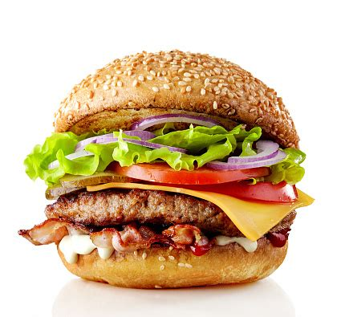

Description:
You can search the web and find all sorts of burger recipes, but when it
comes to making a classic, no-frills, juicy hamburger, all you need is good
quality meat, and a good burger seasoning. There’s no need for fillers like
eggs or breadcrumbs. I’ll walk you through the simple steps to how to
prepare, season, and cook the burgers, plus make-ahead and freezing \
instructions.
Ingredients:
- Buns with Sesame seeds
- Good quality ground beef
- 1 ½ teaspoons ground black pepper
- 1 teaspoon salt
- 2 teaspoons paprika
- ½ teaspoon brown sugar
- ¼ teaspoon garlic powder
- ¼ teaspoon onion powder
- ¼ teaspoon cayenne pepper
- Cheese: cheddar cheese, or your favorite kind
- Lettuce leaves.
- Tomato slices
- Onion slices
- pickle slices
Steps:
- Prep seasoning. Combine all spices in a bowl.
Set aside.
- Form patties. Divide ground chuck into 6 equal
portions and gently form into ½ inch thick patties that are wider
than the burger buns (as they will shrink). Use your thumb to press
an indentation into the center of each patty. Cover and set aside.
- Grill. Just before cooking, sprinkle seasoning over
the patties, then place on hot grill, indent-side up. Close grill
lid and cook for 3-4 minutes, until the bottom of the burger is
seared and juices are accumulating on top of the burger. Flip and cook
an additional 3-4 minutes or until the beef reaches 160 degrees F.
If adding cheese, place cheese slices on burgers during the last
minute of cooking.
- Serve. Remove patties to a plate and allow to rest
for a few minutes before serving in a bun, with toppings.